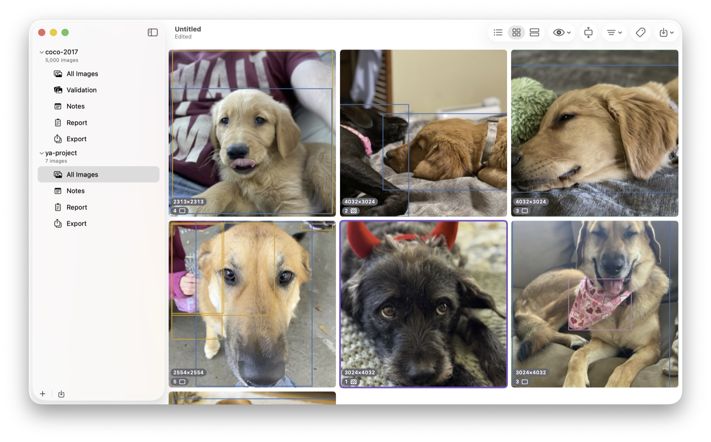

restinggrumpyface · tools & software
Local software for real work.
Native, thoughtful, private apps for niche audiences. They may not be first, but there's no mountain of dependencies, no subscription, and they're easy to install. First up: yaAnnotator, for building object-detection datasets entirely on your Mac.

No accounts. No cloud. No subscriptions. No telemetry. Just local software that does what it says on the tin.
Software
yaAnnotator
Build object-detection datasets entirely on your Mac: boxes, polygons, pixel masks, and model-assisted labeling.
Download on the Mac App StoreRF-DETR to Core ML converter
Open-source tooling that turns RF-DETR checkpoints into Core ML detectors with class names embedded, ready for yaAnnotator or your own apps.